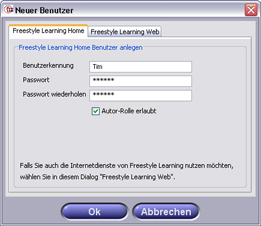

Zum Anlegen einer neuen Benutzerkennung wählen Sie im Menü den Eintrag "Benutzer / Neu...". Geben Sie im darauf erscheinenden Dialog den Namen des neuen Benutzers sowie das neue Passwort ein.

Für den neuen Benutzer ist zunächst nur die Lerner-Rolle erlaubt. Möchten Sie mit der neuen Benutzerkennung auch in der Autor-Rolle arbeiten (zum Erstellen von Learning Units), setzen Sie ein Häkchen in das Auswahlfeld "Autor-Rolle erlaubt".
Zurück zur Hauptseite